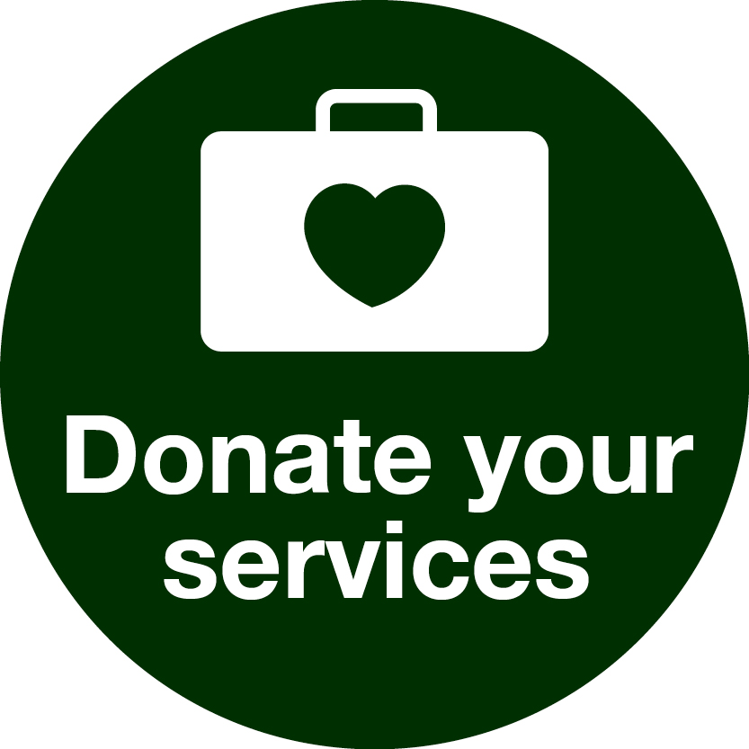

Scrap Symphony Sanctuary
Eco-Friendly Donations
Welcome to “Eco-Friendly Donations”
Think us Before you throw ..
Think us Before you throw ..
The project titled "Web-Based Application for Waste Management and Donation" aims to create a platform
that facilitates the collection and distribution of surplus items, such as food, clothing, books, money, toys,
etc., to those in need through collaboration with NGOs. This innovative web application for waste management
is designed to streamline the process of gathering excess items from various sources, such as hotels,
restaurants, event venues, shopping malls, and general stores, and redistributing them to individuals facing
hardships.
The primary objective is to minimize waste, particularly in the form of leftover food, clothing, and other
resources, by connecting donors with NGOs that focus on supporting disadvantaged communities.
For example, restaurants and catering services can use the application to notify NGOs about available surplus food, allowing these organizations to request and coordinate the pick-up and distribution of these items to those who require assistance.

This "Web-Based Application for Waste Management and Donation" serves as a valuable tool for promoting
collaboration between donors and NGOs, ultimately working towards a more sustainable and compassionate
approach to managing surplus resources for the betterment of society.
SCRAP SYMPHONY SANCTUARY, your premier destination for trading scrap materials and a platform to donate and
manage waste responsibly. Embrace a circular economy, contribute to charitable causes by donating reusable
items, and explore green solutions with our community of startups and entrepreneurs for a sustainable future.
Pages
Home
Donations
About Us
Contact Us


© SCRAP SYMPHONY SANCTUARY. All Rights Reserved.
Terms & condition || Privacy Policy